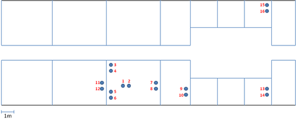

The WISEBED testbed of Lancaster University in the UK currently consists of 16 TelosB-type sensor nodes from MAXFOR. Each node has an SHT11 sensor as well as PAR and TSR light sensors.
We currently employ netbooks as our backbone management network, with two sensor nodes connected to each netbook. The nodes are deployed across the first floor of the InfoLab21 building.
